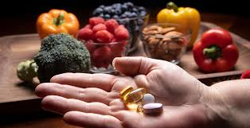
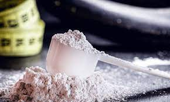
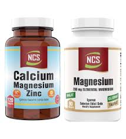
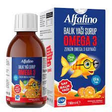
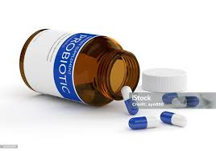
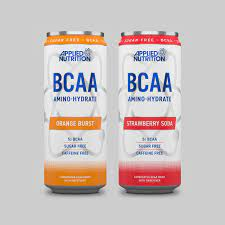

Supplement Nedir? Ne İşe Yarar?
Supplement ne demek, sporcu besinleri demek. Sporculara özel hazırlanmış gıda demek.
Bunlara takviye deniyor çünkü tek başına hayatta kalmanız için gereken tüm vitamin, mineral, yeterli besin bu ürünlerde yok. O yüzden öğün yerine kullanılmazlar. Supplement eksik gidermek için var.
Bu yüzden önce eksik olan besini anlamak önemli.
Supplement incelemelerine başlamadan önce, bu konuda yanlış bilinen 2 noktaya vurgu yapmak istiyorum:
Supplement zararlı değildir!
Supplementler sıkça ilgili olmayan insanlar tarafından garip karşılanabiliyor, fakat bu ürünler birer besindir. Besin ne kadar zararlı olursa, supplement de o kadar zararlı olabilir.
Supplementler işlenmiş besinlerdir; fakat kendi besininizi kendiniz üretmiyorsanız, supplementlere ayrıca kötü bir gıda gibi bakmak biraz komik. Hatta ne kadar iyi beslenirseniz beslenin, kimi gıdalar diyetinizde eksik kalabilir.
Bu konuda protein tozu makalemizde geniş incelememiz var, onu okumanızı öneririm.
Supplement mucize değildir!
Supplementler, sporcu besinleri, besindir. Besin ne kadar faydalı olursa, supplement de o kadar faydalı olabilir.
Supplementler sadece ihtiyacımız olan gıdalar izole edilerek sunulduğu için kullanım kolaylığı oluştururlar. Yerleri, zamanları vardır. Fakat inanılmaz farklar oluşturmazlar. Antrenman yapmadan, düzgün beslenmeden bu ürünleri kullanmak takımı giymeden papyon takmaya benzer.
En İyi Supplementler
Peki en etkili supplement hangisi? Paranızı hangi ürünlere ayırmalı, hangisini almalısınız?
Yeni başlayanlar için supplementler özellikle büyük bir endişe, biz burada size gitmeniz gereken yolu kolaylaştırıyoruz.
Kreatin
Kreatin ağırlık çalışması, sprint, güreş gibi güce dayalı spor yapanlar için enerji kullanımında rol oynar.
Araştırmalara göre temposu düşük, yoğunluğu yüksek sporcular için performans artıracak tek supplement kreatindir.
Gücünüzü doğrudan etkilediği için daha yüksek ağırlıklarla çalışmanıza yardımcı olabilir, dolaylı olarak da kas gelişimini ve kütle artışını destekler. Üzerinde en çok araştırma yapılan supplement olan kreatin, hiçbir sağlık sorununa sebep olmadığı gibi; beyin, kemik, kas ve karaciğere faydalıdır.
Kreatin ürünleri arasında dağlar oynamaz, fakat bir miktar kalite farkı bulunuyor. Farklı kreatin formları da bulunuyor, fakat en temel kreatin monohidrat da işimizi görebiliyor.
Kreatin suda kolay çözünen bir madde olmadığı için toz yerine tablet olarak da tercih edebilirsiniz, tamamen arzunuza göre.
ZMA (Çinko ve Magnezyum)
Çinko ve magnezyum… Metabolizmanın birçok faaliyetinde birinci derecede rol oynayan mineraller. Eksikliğinde ortaya çıkan sıkıntılardan birkaçı: Düşük cinsel istek, saç dökümü, tırnakta beyaz lekeler, düşük testosteron ve sivilce…
Ailecek supplement etmeniz gerekiyor, özellikle sporcuların eksik olduğu mineraller. Supplement ile desteklenmesi testosteronunuzu doğal olarak yükseltir (olması gerektiği yere çeker) ve uykularınızdan aldığınız verim artar. Dolaylı olarak salonda ve mutfakta yaptıklarınızın yürümesine yardımcı olur.
Çinko ve magnezyumu ayrı ayrı alabilirsiniz elbette. Fakat sporcular genelde bunu ZMA olarak alırlar. Dozları buna göre ayarlanmıştır ve bu şekilde daha rahat alabilirsiniz.
Omega-3 Balık Yağı!
Genellikle diyetimizde omega-6 oranı omega-3 oranından çok fazla. Hele bir de spor yapıp, hayvansal gıda tüketenlerde omega-3 oranı çok düşük oluyor. Bu birçok probleme kapı aralıyor. Eğer uzun dönemde sağlığınızı düşünüyorsanız, antrenmanlardan yenilenmenizi hızlandırmak istiyorsanız, omega-3 olmazsa olmaz.
Balık yağı hapı veya Omega 3 supplementleri hakkında geniş makalemizden daha fazla bilgi almanızı tavsiye ederiz. Önemli bir supplement.
Piyasada birçok farklı ürün var, hangisini tercih etmeliyim, kafam karıştı diyorsanız haksız sayılmazsınız. Omega-3 balık yağı supplementlerinin kalitesi ve miktarı önemli.
Düzenli kullanmanız gereken bir supplement olduğu için fiyatı da önemli. Bu yüzden en iyisini anlamak için makalemizi incelemenizi öneririz.
Probiyotik Supplementler
Antrenman yaptınız, uykunuza önem veriyorsunuz, besleniyorsunuz da. Fakat yediğiniz gıdaların gitmesi gerektiği yere gittiğinden emin misiniz?
Bunu bizim için yapanlar bakteriler. Fakat biz hayatımıza antibiyotikleri, işlenmiş besinleri, stresi ve tahılı dahil ettiğimiz zaman bu bakteriler işlerini yapamıyorlar, emekler boşa gidiyor.
200’den fazla araştırma 170’ten fazla hastalığın eksik probiyotikler sebebiyle olduğunu söylüyor. Huzursuz bağırsak (IBS), zayıf bağışıklık sistemi, iltihaplanmalar, egzama, cilt problemleri, kötü nefes kokusu, ishal veya kabızlık… Bu sorunları yenmemiz için probiyotikler çok önemlidir.
Probiyotik aktif bakterilerdir, canlı olarak almanız lazım. Prebiyotikler ise, zaten olan bakterileri besleyen gıdalardır. Prebiyotikler ısıdan nemden etkilenmezler. İki formu da ihtiyaca karşılık verir.
Bakteri sayısı, iyi bir probiyotik supplement için önemli bir gösterge, fakat bakteri çeşitliliği, miktardan daha önemli.
Özellikle lactobacillus rhamnosus ve lactobacillus acidophilus önemli bakterilerin başında geliyor. Bu üründe bunları içeren zengin bir karışım, bu yüzden rahatça önerebiliriz.
Probiyotik supplement alırken dikkat etmeniz gereken son kullanma tarihlerinin olması. Bakterilerin hala canlı ve etkili olup olmadığını başka türlü anlayamazsınız. Ölü bakteriye de ayrıca para vermenize gerek yok, zaten onları kalitesiz gıdalardan yeterince alıyoruz. Bu ürünlerden bütçenize uygun olanı tercih edin.
BCAA (Amino Asit)
Protein ihtiyacını gün içerisinde düzenli olarak alanların takviye etmesi şart değil. Fakat antrenmandan aldığım verim maksimum olsun diyorsanız, bir an önce yenilenmek istiyorum diyorsanız alacağınız ürün BCAA olacaktır. Eğer intermittent fasting ile aç antrenman yapıyorsanız – ki yağsız kas kütlesi oluşturmanın en popüler yöntemlerinden biridir – antrenman esnasında BCAA oldukça önemli.
Ayrıca ağırlık çalışması değil de; koşma, yüzme veya bisiklet gibi uzun tempolu sporların içindeyseniz BCAA performansınızı da artıracaktır. Söz konusu performans ve kas gelişimini olduğunda en önemli amino asitler bu dallı zincirli amino asitlerdir.
İyi bir BCAA supplementi en az 2 kat lösin amino asiti içerir. Ayrıca antrenman öncesinde kafein de barındıran kompleks versiyonları tercih edebilirsiniz.